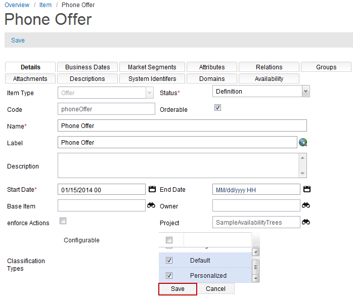

Classification Types
Classification types are to support multiple types in items and attributes. These types are used to identify items and attributes under different environments (for example, Service registry, Order, or Catalog). You can define multiple types for item and attributes, which are used to mark item or attribute is browse-able, selectable, or configurable in different environments. The type list is from cwt_classification code table. New type code can be added in the code table. The pre-defined types are Browse-able, Show on Detail, Configurable, Provisionable, and Searchable. These types are multi-selectable.
Classification types can be added in Item, Item Attribute, Item Image, Item Description, and Item Charge Type. To add a classification types for an Item in the Catalog appplication, follow these steps:
- Click Commercial Modeling > Items from the Overview page.
- The Item page appears; click the New button to create an item.
- For the Classification Types field, click add (
 ) button.
) button. - The list of classification types appears; select the types for the item from the list.
- Click the Save button. The selected classification types appears in the classification types field.
- Click the Save button to save the item with the classification types.

Note: You can select multiple types from the list.
Note: You can follow the above mentioned steps to add classification types for Item Attribute, Item Image, Item Description, and Item Charge Type.
In runtime, you can use getClassificationTypes API by item, Attribute, Image, or Description object to get classification type list. The API hasClassificationType can be used to check if the given classification type is assigned. For more information on the API`s, refer to JavaScript documentation.